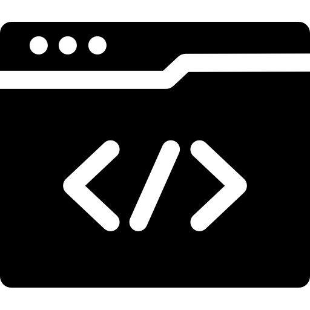

- Autodidactisme - *****
- Créativité -------- ****
- Curiosité --------- *****
- Dynamisme ------ ****
- Motivation ------- *****
Thibault_MARIE()
{ WEB DEVELOPER FULL STACK }
- Thibault Marie
- 31 Rue de la Michaudière
- 44300 Nantes
- 06 52 51 02 53
- thibault.marie.pro@gmail.com
Recherche un stage de Développeur FullStack - CDADisponible du 15 mai au 7 juillet 2023
Expériences Professionnelles
JUIN/SEPT 2020
Stage WEB DEV FULLSTACK
@Domicile en remote -
Purple Lab Paris

- ▪ Développement d'une application sur le sexisme au travail
- ▪ sailsJS | MongoDB | nodeJS
- ▪ Recherche Frontend, Maquettage, UX
- ▪ Recherche Backend, BDD, MVC, sécurisation des données
AOUT 2019
Stage WEB DEV DEVOPS
@Domicile en remote -
Objective Machine
- ▪ Déploiement d'un web server sous ubuntu server
- ▪ Prise en main de Nginx/diagnostic réseau
- ▪ Étude de l'approche DevOps
2017/18
Trader en Cryptomonnaies
@Domicile - Freelance

- ▪ Étude des plateformes de Trading
- ▪ Conception d'algorithmes pour faciliter la prise de décision
- ▪ Répartition de l'approche (BTC, LTC, ETH, ZEC...)
2015/17
Conseiller Artistique
@Asso des Arts du Spectacle -
Grenoble(38)
- ▪ Mise en relation de profils pour regrouper les compétences
- ▪ Recherche/travail en groupe/élaboration d’oeuvres
- ▪ Animation d'un atelier d’initiation au théâtre
2013
Minage Informatique
@Domicile - Freelance
- ▪ Gestion d'un réseau de machines
- ▪ Montage/maintenance d'un rig à grande puissance de calcul
- ▪ Calcul de rentabilité
Formations / Compétences / Explorations
- BAC S SVT
Option Arts Plastiques
Lycée du Dauphiné
Romans sur Isère
2011 - Licence 1
Biologie
Université Joseph Fourier
Saint Martin d'Hères
2013 - Formation
Digital Active Google
En ligne
Domicile
2017 - Développeur Web
et Web Mobile
Human Booster
Grenoble/Domicile
2020 - Concepteur Développeur
d'Application
ENI
Nantes
2020
-
LANGUES
Français - C2
Anglais - B2/C1
Espagnol - A1/A2 -
INFORMATIQUE
Traitement de texte
Navigation web
Trading de cryptomonnaies
Trifouillage de Windows pluridisciplinaire
Veille techno
Adobe XD
VirtualBox -
TECHNOS
HTML/CSS/Bootstrap
Javascript/Jquery
MVC/POO/PDO
Symfony/Twig
C#/PHP/Java
SQL/NoSQL -
PROJET / IDE
GitHub
Trello/MoSCoW
Agile/SCRUM
SGBD/MCD/JMerise
vsCode / Eclipse
Intérêts extraprofessionnels
Autodidacte en Web Dev (HTML, CSS, JS, PHP, SQL, Bootstrap, JQuery, Nginx mon chouchou) / l'open source / auteur et maître de jeux de rôle / j'aime le goût des choses simples / la zététique / la science / la philo / découvrir des trucs / la sagesse / la culture populaire / j'aime le goût des choses compliquées / le partage / la raison / l'optimisation / inventer des trucs / les jeux vidéos / les frameworks / la dataScience / la cybersécurité / Python / Unity / le Parkour / le déploiement / les PWA / le Pentesting / ...
resume made in HTML/CSS